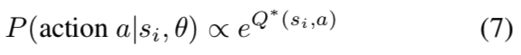

Author : Brian D. Ziebart, Andrew Maas, J.Andrew Bagnell, Anind K. Dey
Paper Link : http://www.aaai.org/Papers/AAAI/2008/AAAI08-227.pdf
Proceeding : Proceedings of the Twenty-Third AAAI Conference on Artificial Intelligence 2008
0. Abstract
2008년 당시의 최근 연구는 imitation learning의 문제를 Markov Decision Problems(MDP)로 해결함으로써 모방 학습에 대한 장점을 보였습니다. 이러한 접근법은 optimal policy에 가깝도록 유도된 learner’s behavior이 expert’s demonstrated behavior를 모방하도록 recovering하는 문제에 대한 학습으로 다룰 수 있습니다.
이 논문에서는 the principle of maximum entropy에 기반한 확률적인 접근을 이용할 것입니다. 이 접근을 통해 decision sequences에 대해 잘 정의된 normalized distribution을 만들 것입니다.
뒤이어 실험 부분에서는 수집된 data가 본질적으로 noisy하고 imperfect할 때의 real-world navigation, driving behaviors들을 modeling하는 technique를 제시하였습니다. 또한 확률적인 접근법을 이용하여 route preference의 modeling하는 것 뿐만 아니라 부분 trajectories 기반인 routes 및 destinations를 reasoning하는 새로운 접근법을 가능하게 하였습니다.
1. Introduction
Imitation learning의 목표는 agent가 선택할 행동 및 의사결정을 예측하는 것을 배우는 것입니다. 예를 들어 사람이 물체를 잡기위한 motion 혹은 운전자가 집에서 직장으로 가기위한 경로 등이 있습니다.
Imitation learning의 문제에 접근하기 위한 최근 아이디어는 search, planning, or 더 일반적으로 MDP의 solution으로 학습된 poliy의 space를 구성하는 것입니다. 여기서의 핵심 개념은 agent가 알려지지 않은 reward function(특징이 선형이라 가정)을 최적화하고, demostrated behavior을 (near)-optimal으로 보이게 만드는 reward weight를 찾아야 하는 것입니다.
1.1 Pose a problem
이 논문에서는 imitation learning에서의 uncertainty에 대해 reasoning하는 확률적 접근을 이용합니다. demonstrated behavior의 reward function을 매칭하는 constraint가 있을 때, decision에 대한 distribution를 선택할 때의 ambiguity를 해결하기 위해 the principle of maximum entropy를 사용합니다. (이 부분은 다음 section에 더 자세히 풀어서 적어두었습니다.) 또한 Deterministic MDPs에 대해 learning 및 reasoning하는 효율적인 algorithm을 제안하고, 추가적으로 non-deterministic MDP에 대해서도 tractable(다룰 수 있는)하도록 만들 것입니다. 결과로 나타나는 분포는 behaviors에 대해 normalize된 probabilistic model입니다.
여기서 중요하게 다룰 것은 demonstrated behavior이 noise하고 imperfect behavior을 하기 쉽다는 것입니다. 하지만 maximum entropy 접근법을 통해 이러한 uncertainty를 다루는 방법을 제공합니다.
2. Background
먼저 imitation learning setting을 하겠습니다.
$\zeta$ is a trajectory or path.
$s_i$ is states.
$a_i$ is actions.
$f_{s_j} \in \mathfrak{R}^k$ is mapping features of each state.
$\theta$ is reward weights parameterizing reward function.
$f_{\zeta} = \sum_{s_j \in \zeta} f_{s_j}$ is sum of the state features along the trajectory (or path) = Learner’s expected feature counts
reward$(f_{\zeta}) = \theta^T f_{\zeta} = \sum_{s_j \in \zeta} \theta^T f_{s_j}$ is reward function.
$\tilde{f} = \frac{1}{m} \sum_i f_{\tilde{\zeta_i}}$ is Expert’s expected feature counts based on many (m) demonstrated trajectories. $\tilde{\zeta_i}$ is expert’s demonstrated single trajectories.
2.1 MMP와 APP
이 논문에서는 본격적으로 들어가기에 앞서 MMP 논문과 APP 논문을 다시 한 번 정리해주는 단락이 있습니다. 개인적으로 remind해주는 단락이 있어서 논문을 더 편하게 읽었던 것 같습니다.
MMP
expert에 대해 정확한 reward weight을 recovering하는 것은 앞서 Linear IRL에서도 말했듯이 ill-posed problem 입니다.
MMP 논문에서는 structured maximum margin prediction으로 이 문제를 다룹니다. Expert와 learner’s learned policy 사이의 불일치를 직접적으로 측정한 loss function들을 이용하였고, Structured margin method를 이용하여 reward fucntion을 효율적으로 학습하였습니다.
하지만 MMP는 아주 중요한 단점 이 있습니다. 바로 single reward function이 대체 가능한 다른 (더 좋은) demonstrated behavior보다 최적(optimal)의 또는 더 좋은 demonstrated behavior을 만들 수 없다는 것입니다. 예를 들어 expert’s demonstrated behavior이 imperfect하거나 planning algorithm이 관련 state space의 일부만 포착하여 observed behavior을 완벽하게 설명할 수 없을 때 이러한 단점이 상당히 자주 발생합니다.
APP
APP는 Linear IRL에 기반하여 다른 접근을 보입니다. Abbeel은 expert’s policy와 learner’s behavior 간의 feature expectation (Equationation 1)을 matching하는 전략을 제안합니다.
$$\sum_{Path \space \zeta_i} P(\zeta_i) f_{\zeta_i} = \tilde{f} \,\,\,\,\,\,\,\,\,\, (1)$$
하지만 불행하게도, IRL 개념과 feature count의 matching은 ambiguous 합니다. 각각의 policy는 많은 reward function (e.g., all zeros)에 대해 optimal 할 수 있고, 이에 따라 많은 policy들은 같은 feature count들을 유도하기 때문입니다. 위에서 말했던 것처럼 ill-posed problem이기 때문에 이러한 ambiguity가 발생하게 됩니다. 따라서 이 논문에서는 the principle of maximum entropy 이론을 통해 이러한 ambiguity를 해결하려고 하는 것입니다.
2.2 The principle of Maximum Entropy
다음으로 이 논문에서 중요한 개념인 principle of maximum entropy 에 대해서 알아 보겠습니다.
정보이론 관련 이론들이 처음이신 분들은 아래의 링크를 보시고 계속 따라와주세요!
이 이론이 처음 나온 것은 1957에 Jaynes라는 분이 다음과 같이 제시하였습니다. Jaynes 1957
Maximizing the entropy of the distribution over paths subject to the feature constraints from observed data implies that we maximize the likelihood of the observed data under the maximum entropy distribution
이어서 Wikipedia와 CMU 10703 Fall 2018 에는 다음과 같이 나와있습니다.
The principle of maximum entropy states that the probability distribution which best represents the current state of knowledge is the one with largest entropy, in the context of precisely stated prior data
결국 하고 싶은 것은 어떠한 distribution이 있을 때, 이 distribution의 entropy를 maximization하고 싶은 것입니다. 이것을 바꿔말하면 maximum entropy distribution에서의 observed data의 likelihood를 maximization하고 싶은 것이고, 더 풀어서 말해보면 current state of knowledge를 가장 잘 나타내는 확률 분포를 찾고 싶은 것입니다.
왜 이렇게 하고싶은 걸까요? 왜 entropy를 최대로 해야 좋을까요? ziebart가 쓴 thesis에 있는 theorem을 통해서 알아보겠습니다. thesis ziebart 2010
IRL 관점에서 해석을 해보자면, feature expection이 MMP부터 나오던 state visitation frequency의 개념이 되면서 policy에 대해서 worst case guarantee가 된다는 것입니다. 다시 말해 우리가 가지고 있는 제한적인 expert’s demonstrations를 만족하면서 나머지 unseen region을 포함하는 어떠한 policy를 찾는 것이 목적이라고 했을 때, “악의적으로 최악의 policy를 고를 확률”을 minimization로 만드는 효과가 있는 것입니다.
정리해보면, 어떠한 distribution의 entropy를 maximization할수록 최악의 policy를 고를 확률을 minimization하는 효과가 있는 것입니다.
The principle of maximum entropy 관련하여 더 궁금하신 분들은 ziebart가 쓴 thesis에서 “chapter 5 : The Principle of Maximum Causal Entropy”를 읽어보시길 바랍니다.
그러면 이제 본격적으로 the principle of maximum entropy을 이용한 Maximum Entropy IRL에 대해서 알아보겠습니다.
3. Maximum Entropy IRL
이 논문의 저자는 feature counts를 matching할 때 ambiguity를 다루기 위한 다른 접근법을 이용합니다. 다시 말해 어떠한 distribution 선택할 때 ambiguities를 해결하기 위해 the principle of maximum entropy를 사용한다는 것입니다.
3.1 Deterministic Path Distributions
Policy들에 대해 reasoning하는 이전 연구와는 달리, 이 논문에서는 가능한 behavior의 전체 class에 대한 distribution을 고려합니다. 이것은 deterministic MDPs(Figure 1a)에 대한 variable length(Figure 1b)의 경로에 해당합니다.
위에서 부터 계속 말했듯이, 이 논문에서는 feature expectation(Equation 1)과 matching되는 것 이상의 추가적인 preference를 나타내지 않는 분포를 선택하여 ambiguity를 해결하는 the principle of maximum entropy를 이용합니다. Deterministic MDPs의 path에 대해 결과로 나타나는 distribution은 reward weight $\theta$ (Equation 2)에 의해 parameterizing됩니다.
위의 수식은 저자가 the principle of maximum entropy 이론을 적용할 distribution으로 사용하겠다는 뜻입니다. 오른쪽에 나오는 수식들을 깊게 파다보면 partition function($Z(\theta)$)이라는 것이 나오고 더 깊게 파다보면 energy에 대해서 나오기 때문에 위의 수식에 대해서는 깊게 다루지 않겠습니다. 여기서 기억해야할 것은, 결국 이 논문에서는 expert와 learner 사이의 expected state feature counts를 matching하기 위해서 the principle of maximum entropy 이론을 적용할 distribution에서의 parameter인 $P(\zeta_i|\theta)$를 최대로 하는 $\theta$를 잡아나가겠다는 것입니다.
3.2 Non-Deterministic Path Distributions
앞서 다룬 것은 deterministic MDPs에 대한 내용이었고, 일반적인 non-deterministic MDP에서는 어떻게 구성되는지 살펴보겠습니다. action은 state transition distribution($T$)에 따른 state(Figure 1c)간의 non-deterministic transition을 만듭니다. 이러한 MDP(Figure 1d)에서 path들은 agent의 action 선택과 MDP의 random 결과에 의해 결정됩니다. 또한 transition distribution($T$)와 feature expectation(Equation 1)을 matching하도록 제한된 path에 대해 maximum entropy distribution을 사용할 것입니다.
모든 action에 대한 다음 state를 생각해볼 때, 먼저 action 결과의 space를 $\mathcal{T}$, action 하나의 결과에 대한 sample을 $o$라고 해보겠습니다. $o$는 action을 한 최종 결과이고, $\mathcal{T}$는 action의 선택 집합이라고 할 수 있습니다. 이 두개가 같으면 deterministic하다고 볼 수 있습니다.
이어서 non-deterministic Path에 대한 the principle of maximum entropy 이론을 적용할 distribution은 다음과 같습니다.
위의 수식에서 $I_{\zeta \in o}$은 Indicator function으로서 $\zeta$가 $o$와 compatible할 때 1이고 다른 경우에는 모두 0입니다.
하지만 위의 수식에서 Equation (3)에 있는 수식인 distribution을 계산하는 것은 일반적으로 intractable합니다. 따라서, 만약 transition randomness가 행동에 제한된 영향을 미치고 모든 $o \in T$에 대해 partition function이 상수라면, path에 대한 tractable approximate distribution(Equation 4)을 얻을 수 있습니다.
3.3 Stochastic Policies
Path에 대한 distribution은 Equation (4)의 partition function이 수렴할 때 stochastic policy(i.e., 각 state의 이용가능한 action에 따른 distribution)를 제공합니다.
3.4 Learning from Demonstrated Behavior
앞에서 다룬 the principle of maximum entropy를 생각하면서 $\theta$를 어떤 식으로 잡아나가는지, 이에 따른 loss($L(\theta)$)를 어떻게 정의하는지 살펴보겠습니다.
위의 수식은 deterministic MDP에 대해 convex이고 optima는 gradient-based optimization을 사용하여 얻어집니다. 또한 위의 수식과 같이 $P(\tilde{\zeta}|\theta, T)$를 최대로 하는 $\theta$를 잡아나갈 것이며, 바꿔말하면 결국 expert와 learner의 expected state feature count를 matching하도록 하는 최대의 $\theta$를 찾고 싶은 것입니다. 그리고 이것이 가운데 있는 수식처럼 gradient로서 우리가 줄여나가야할 loss $L(\theta)$가 됩니다. 이것을 expected state visitation frequencies($D_{s_i}$) 관점에서 다시 표현해보면 아래와 같습니다.
그렇다면 expected state visitation frequencies $D_{s_i}$는 어떻게 효과적으로 구할까요?
3.5 Efficient State Frequency Calculations
아래의 expected state visitation frequencies $D_{s_i}$를 구하는 방법은 dynamics $P(s_{t+1}|a_t, s_t)$가 알려져 있을 때 에 구하는 방법입니다.
위의 algorithm은 large fixed time horizon을 사용하여 infinite time horizon에 대한 state visitation frequencies를 approximate합니다.
각 step에 대해서 직관적으로 말하자면, step (1)과 (2)의 경우 쉽게 말해 value iteration이라고 보시면 되고, Z를 state visitation frequency count로 생각하시면 됩니다. 이어서 step (3)에서는 전체 state에 대해 각 action이 얼마나 방문했는지 count의 개념으로 나눠주고, step (4)에서 initial state에 대한 count를 setting한 뒤에, step (5)에서는 각 time step마다 앞서 계산해두었던 state visitation frequency count와 dynamics $P(s_k|a_{i,j}, s_i)$를 통해 recursive하게 계산해줍니다. 마지막으로 step (6)에서는 총 state visitation frequency count를 합산합니다.
위의 algorithm은 보통 dynamics model을 알 때 사용하는 것이므로 일반적으로 sampling을 이용한 방법 에서는 사용하지 않아도 됩니다. sampling을 이용한 방법에서는 expert의 expected state feature counts을 구하는 수식처럼 learner도 똑같이 RL step을 진행하여 (sampling 방법이기 때문에 꽤 많이 돌려야합니다.) expected state feature counts를 구해줍니다. 더 자세한 내용은 code를 봐주시면 감사하겠습니다. MaxEnt code - learner_feature_expectations
지금까지 이론적인 부분들을 다뤄봤고, 다음으로 실험 부분에 대해서 살펴보겠습니다.
4. Driver Route Modeling
- IRL에 대한 최대 엔트로피 접근법에 대한 연구는 운전자 경로 선택에 대한 imitation learning에 적용
- 주행 행동을 예측하고 경로 추천을 위해 유용한 유틸리티 기능(function)을 복구하는데 목적이 있음
- 당시를 기준으로 demon-strated 데이터의 크기면에서 가장 큰 규모의 IRL 문제
4.1 Route Choice as an MDP
- 도로 네트워크는 알려진 구조로 대규모 계획 공간을 제시
- 300,000 개가 넘는 state(road segment)와 900,000개의 action(transitionsa at intersaction)이 있는 deterministic MDP인 Pennsylvania의 Pittsburgh를 둘러싼 도로망에 대해 모델링.
- 도로 네트워크 내에서 계획을 실행하는 운전자는 시간, 안전, 스트레스, 연료비, 유지 보수 비용 및 기타 요인 사이의 균형을 효율적으로 최적화하면서 목표에 도달하려고 시도한다고 가정.운전자는 비용과 관련된 목표를 최적화하는 전문가임.
- 목적지를 추가 비용이 발생하지 않는 상태인 MDP로 표현
- trip들마다 목적지가 다르고 해당 MDP가 조금씩 다름
- reward weight가 goal state와는 독립적이고 그렇기 때문에 단일 보상 가중치는 다른 MDP에서 단일 보상 가중치를 학습 할 수 있다고 가정
4.2 Collecting and Processing GPS Data
- 하루 12시간 동안 25 명의 Yellow Cab 택시운전자에게서 GPS 추적 데이터를 수집. 10만 mile 이상의 데이터 세트를 사용. 피츠버그 주변의 지역을 운행하고 3,000시간을 운전한 내역
- GPS 데이터를 도로 네트워크에 맞추기 위해 particle filter를 사용함. 이 때 time-based threshold를 이용해서 13000 개의 별개의 trips을 분할 된 지점을 결정
- 짧거나 (10개 미만의 도로 구간)나 cyclic하거나 noisy한 데이터는 제거(약 30%에 해당). 이후 남은 데이터에서 20%은 training set으로 사용하고 나머지 80%는 test set으로 사용함(test set의 크기는 7403개)
4.3 Path Features
- 도로망 데이터는 각 도로 세그먼트를 설명하는 상세한 특성 집합을 포함.
- 특성은 4가지를 고려 : road type, speed, lanes, transitions
- road type은 각 크기 (고속도로에서 지방 도로, 고속에서 저속, 1 차선에서 여러 차선)로 분류
- transitions은 straight, left, right, hard left, hard right
- path는 각 road segmentation의 miles 수 와 각 transition 유형의 숫자로 설명.
4.4 IRL Models
- 도로 네트워크의 경로를 설명하는 택시 운전자의 집단 utility function를 학습하는 task에 MaxEnt을 적용하여 접근
- 가능한 모든 경로의 클래스가 고정 길이보다 상대적으로 양호한 경로의 작은 고정 클래스 내에서 입증된 경로의 확률을 최대화.
- 알고리즘은 두 가지 class 모두에 효과적이고 상당한 속도 증가를 제공한다(비정확성 최적화를 도입하지 않고).
- 두 가지 다른 IRL 모델과 비교함
- 첫 번째는 새로운 경로를 예측할 수 있지만 밀도 추정이 불가능한 MMP
- 두 번째 모델은 베이지안 IRL (Ramachandran & Amir 2007)과 하이브리드 IRL (Neu & Szepesvri 2007)에 사용된 action-based distribution model(Action)을 사용
- 어떤 특정한 상태에서 행동 선택은 행동을 취한 후에 최선의 정책에 대한 미래의 기대 보상에 따라 분배되는 것으로 가정됨 $Q^* (S, a)$. 
- 현재의 task에서의 값은 단순히 특정 행동을 취한 후 목표에 대한 최적 경로 비용
action-based와 MaxEnt의 차이
- A에서 B까지 3개의 경로가 존재함
- MaxEnt에서 각 경로가 동일한 보상을 제공한다고 가정하면, 각 경로는 동일한 확률을 갖음
- action-based model에서 경로 3은 50%의 확률이고, 경로 1과 2는 25%의 확률를 갖음.
- action-based distribution의 경로는 action level에서 다른 경로를 가진 확률 mass과 경쟁할 뿐이며, 이전에 발생한 다른 경로와는 경쟁할 수 없음.
- 이 문제는 CRF의 label bias라는 것과 같고 성능에 좋지 않은 영향을 미친다고 하며 종국에 IRL에 부정적인 결과를 야기시킴.
ex) 가장 높은 보상 정책은 모형에서 가장 가능성이 높은 정책이 아닐 수 있으며, 동일한 기대 보상을 갖는 정책은 서로 다른 확률을 가질 수 있음. - 최대 엔트로피 분포와 비교할 때이 모델은 더 낮은 분기 계수와 더 낮은 확률 계수를 가진 경로에 더 높은 확률 질량을 제공
- B에서 A로의 왕복 trip의 결과는 다를 수 있음.
4.5 Comparative Evaluation
- 이제 경로의 출발지와 도착지를 train set에 학습을 수행한 이후에 test set경로를 모델링할 수 있는 각 모델의 능력을 평가
- 세 가지 지표를 사용하여 확인
- 모델의 가장 가능성이 높은 경로 추정치를 실제 입증 경로와 공유한 경로 거리 양.
- 테스트 경로의 백분율이 최소한 90%(거리)와 모델의 예측 경로와 일치하는지를 평가.
- 경로의 평균 로그 확률
- Feature Matching의 경우, action-based model에서 학습한 가중치를 사용하여 action-based model 내에서 가장 가능성이 높은 경로와 가장 낮은 비용 경로를 모두 평가.
- 예상 이동 시간에 기초해서 도로의 단위 거리 비용을 도로의 속도에 반비례하는 가중치를 부여하고, 이러한 비용을 고려할 때 가장 빠른 경로(즉, 최저 비용)를 예측.
- MaxEnt 모델을 사용하여 학습한 비용 값. 많은 짧은 도로로 구성된 경로를 penalize하는데 사용할 수 있는 1.4초의 고정 엣지당 비용을 배움.
4.6 Applications
- Bayes의 이론을 경로 선호 모델에 적용함으로써 목적지에 대해 쉽게 추론할 수 있게 됨
- 대상 분포(5개 대상) 및 일부 이동 경로가 지정된 나머지 경로 분포
- 그림 4는 특정 목적지 예측 문제를 보여주는 그림.
- 관측된 총 경로의 비율을 기반으로 도시 주변의 5개 위치 중 한 곳에서 종료되는 경로를 예측하는 모델의 능력을 평가함
- train set를 사용해서 목적지를 미리 형성하고 test set에서 모델을 평가
5. Conclusions and Future Work
이 논문에서는 이전에 있던 ambiguities를 해결하고, optimization에 대해 convex, computationally efficient procedure를 제공하며, 중요한 performance guarantees을 유지하는 inverse RL과 imitation learning에 대한 새로운 접근을 보였습니다.
또한 modeling route preferences의 문제에 대해 논문에서 제시한 방법을 적용했지만, 아쉽게도 주로 작은 feature space를 사용하여 논문에서의 model과 다른 imitation learning의 model들 사이의 차이점을 설명하고 평가하는 데 초점을 맞추었습니다.
더 나아가 연구되어야 할 점은 contextual factors(상황 요인) (e.g., time of day, weather)을 feature space에 포함하고, rush hour 중에만 특정한 도로를 피한다거나 winter weather의 가파른 길을 회피하는 것과 같이 설명할 수 있는 지역 기반 또는 특정 기반 도로의 feature들을 유도하여 논문에서의 model을 더 향상시키고자 합니다.